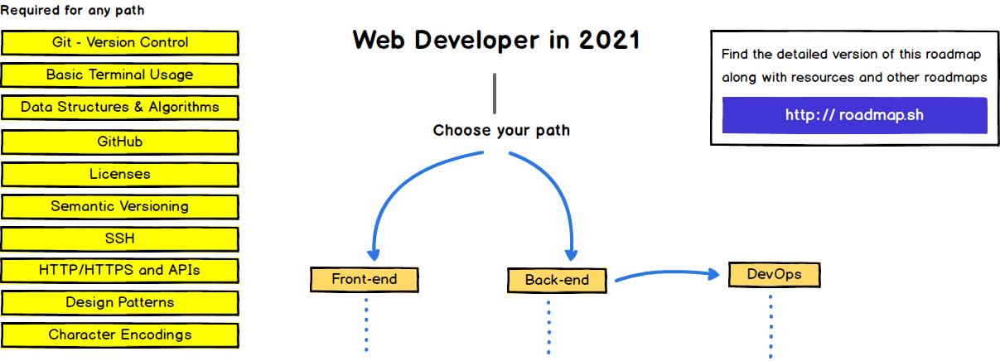

Below are the links by which you can navigate througout the website:
1- Programming languages concept and the history of programmingOne language can't create a lot. All languages are built to deal with the computer and creating simple applications like console applications. No language can create a design for a website so it is a must to use markup and design languages. Languages need also APIs to contact servieces. Morever, languages need some tools to extend thier missions and this can be achieved using IDEs. In general, Any specialization related to programming needs various technologies and tools. For instance, here are some of things you shoud learn to be a good full stack developer:
